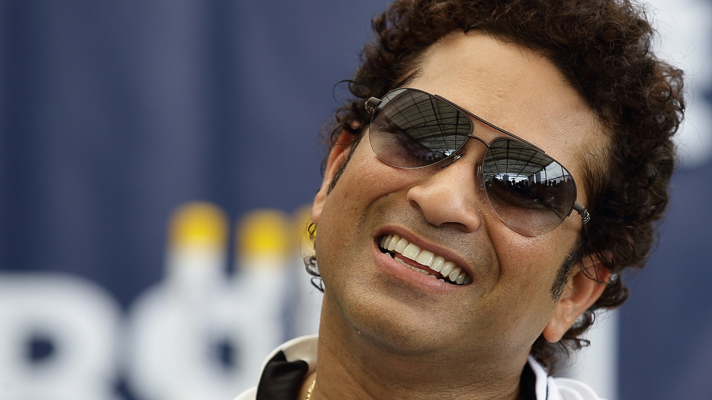

Career
Raj Singh Dungarpur is credited for the selection of Tendulkar for the Indian tour of Pakistan in late 1989, after one first class season. The Indian selection committee had shown interest in selecting Tendulkar for the tour of the West Indies held earlier that year, but eventually did not select him, as they did not want him to be exposed to the dominant fast bowlers of the West Indies so early in his career. Tendulkar made his Test debut against Pakistan in Karachi in November 1989 aged 16 years and 205 days. He made 15 runs, being bowled by Waqar Younis, who also made his debut in that match, but was noted for how he handled numerous blows to his body at the hands of the Pakistani pace attack. In the fourth and final Test in Sialkot, he was hit on the nose by a bouncer bowled by Younis, but he declined medical assistance and continued to bat even as he gushed blood from it. In a 20-over exhibition game in Peshawar, held in parallel with the bilateral series, Tendulkar made 53 runs off 18 balls, including an over in which he scored 27 runs (6, 4, 0, 6, 6, 6) off leg-spinner Abdul Qadir. This was later called "one of the best innings I have seen" by the then Indian captain Krishnamachari Srikkanth. In all, he scored 215 runs at an average of 35.83 in the Test series, and was dismissed without scoring a run in the only One Day International (ODI) he played. Thus Sachin Tendulkar became the youngest player to debut for India in Tests at the age of 16 years and 205 days and also the youngest player to debut for India in ODIs at the age of 16 years and 238 days. The series was followed by a tour of New Zealand in which he scored 117 runs at an average of 29.25 in Tests including an innings of 88 in the second Test. He was dismissed without scoring in one of the two one-day games he played, and scored 36 in the other. On his next tour, a summer tour to England of 1990, on 14 August, he became the second youngest cricketer to score a Test century as he made 119 not out in the second Test at Old Trafford in Manchester, an innings which contributed to a draw and saved India from certain defeat in the match. Wisden described his innings as "a disciplined display of immense maturity".
Achievements
- 1994 – Arjuna Award, by the Government of India in recognition of his outstanding achievement in sports.
- 1997–98 – Rajiv Gandhi Khel Ratna, India's highest honour given for achievement in sports.
- 1999 – Padma Shri, India's fourth highest civilian award.
- 2001 – Maharashtra Bhushan Award, Maharashtra State's highest Civilian Award.
- 2008 – Padma Vibhushan, India's second highest civilian award.
- 2014 – Bharat Ratna, India's highest civilian award.
Biographies
Books
Sachin Tendulkar has been the subject of various books. The following is the listing of books focused on Tendulkar's career:
- Sachin: The Story of the World's Greatest Batsman by Gulu Ezekiel. Publisher: Penguin Global.
- Sachin Tendulkar-a definitive biography by Vaibhav Purandare. Publisher: Roli Books.
- Sachin Tendulkar – Masterful by Peter Murray, Ashish Shukla. Publisher: Rupa.
- If Cricket is a Religion, Sachin is God by Vijay Santhanam, Shyam Balasubramanian. Publisher: HarperCollins India
- Master Stroke: 100 Centuries of Sachin Tendulkar by Neelima Athalye. Publisher: Sakal Publications.
Sachin: A Billion Dreams, an Indian film directed by James Erskine is based on the life of Tendulkar where Tendulkar played his character himself.
| IN A NUTSHELL  | |
|---|---|
|
Name |
Sachin Ramesh Tendulkar |
| Born |
24 April 1973 Bombay (now Mumbai), Maharashtra, India |
| Nickname | Master Blaster |
| Spouse(s) | Anjali Tendulkar (m 1995) |
| Children | 2 |